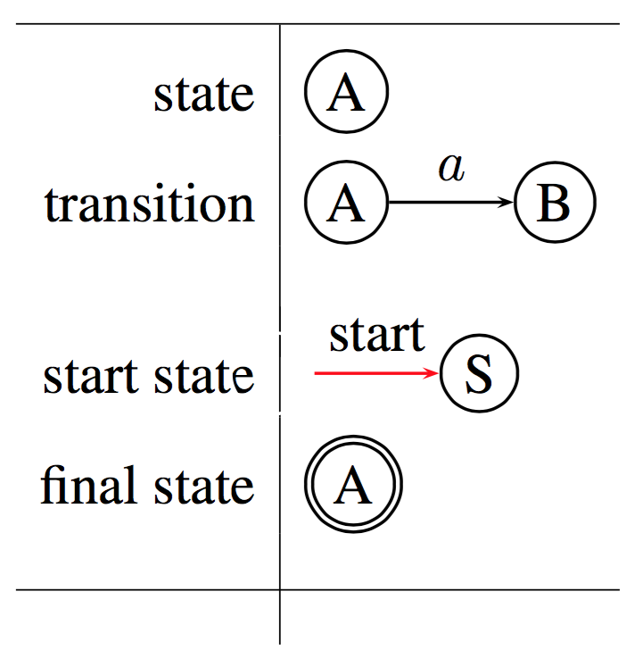
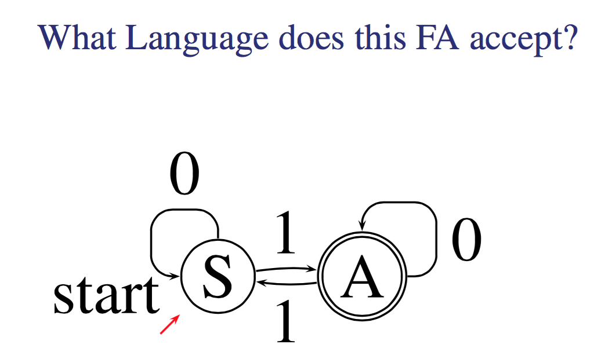
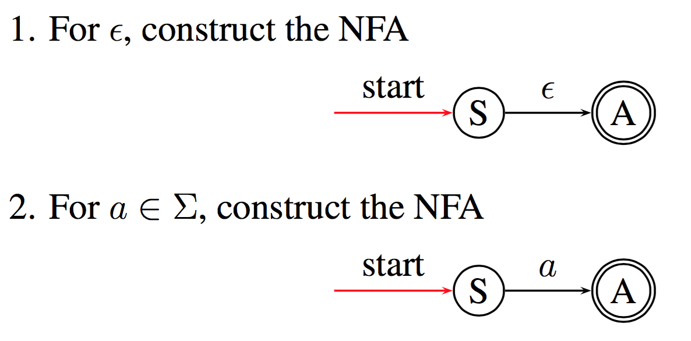
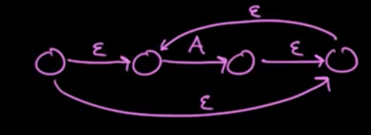
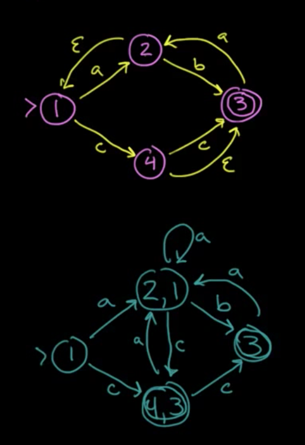
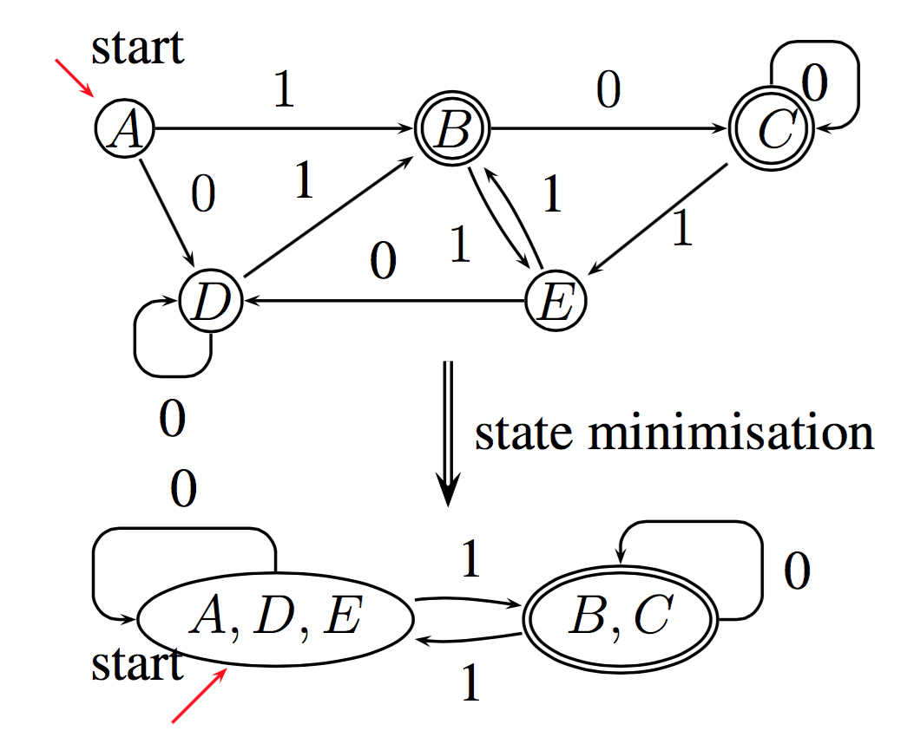
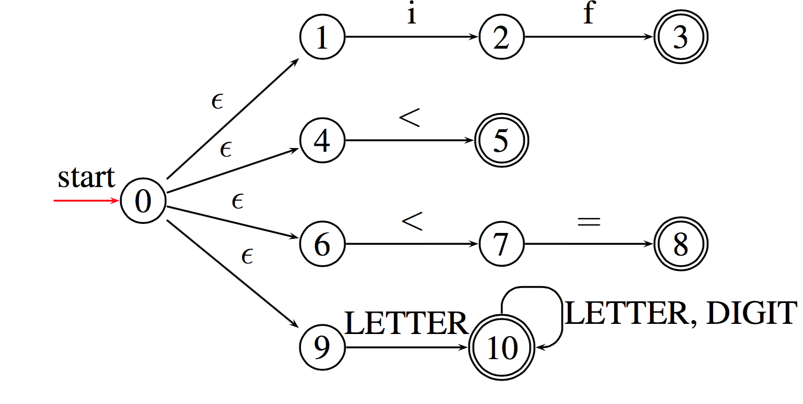
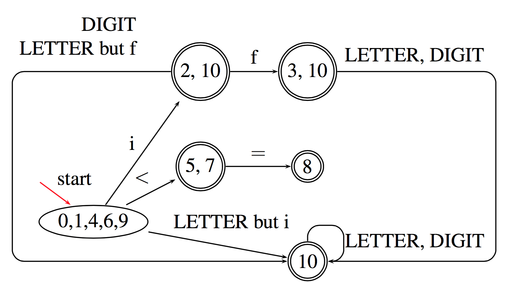
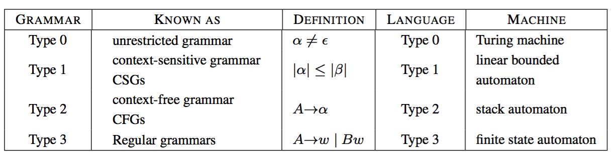

denoted by Σ is any finite set of symbols.
For example this set {0,1} is a alphabet that describes every symbol used in binary strings. This can be call
A finite sequence of symbols drawn from Σ, i.e a string is just a series of symbols from a alphabet connected.
Note that in this notation |s| means the length of string which is just the number of symbols contained.
We use the symbol (\(\epsilon\))
any set of strings over Σ, that is to say a series of strings.
note that it has two special cases
Σ = {0, 1} defines the a language where the only valid symbols are 0 and 1, in this language strings are just 0's and 1's.
lets say every string in this language is a instruction
This language now defines the set of M68K, MIPS, Pentium instructions etc.
now if we say Σ = {a,b,c,...} i.e Σ = ASCII set. We can now define most high level languages such as C, Haskell, VC etc. as every program in C is just a string in this alphabet. the '\n' is just another symbol.
We can split up a string into multiple parts
| Term | Definition |
|---|---|
| prefix of s | s with 0 or more trailing (on the end) symbols removed |
| suffix of s | same as prefix but done with the leading symbols |
| substring of s | s after a prefix and suffix have been removed |
| proper prefix suffix, substring of s | Any nonempty string x that is, respectively, a prefix, suffix or substring of s such that s != x |
We can also concatenate strings, if we have \(x\) and \(y\) adding y onto x or concatenating x and y gives us \(xy\)
if x is key and y is work xy is keyword.
Not too complicated, but do note that with this we have this property with \(\epsilon\)
\(\epsilon x= x\epsilon = x\)
Again kinda obvious but it's good to have this formalised.
Here is a quick table to outline some of these transformations on two languages L and M

This may seem hard to visualise, take a look at the example first

The union of two languages is just a combination of all the symbols in both.
The superscript number just defines length of the string.
the concatenation of two languages is a set of all combinations of a symbol from L followed by a symbol of M.
The Kleene Closure is just the same as the * in regex. I.e it represents 0 or more consecutive instances of a string.
The mathematical representation just says that L* is the set of every possible number of repetitions of L including the empty string, otherwise known as 0 or more concatenations of L.
The Positive closure just states that the empty string is not included in this set.
RE is build on top of this. REs define regular languages (RL) or regular sets. That is to say a certain Regular Expression simply refers to a specific regular language or regular set of strings.
This makes sense as a RE is used to match a certain type of string and thus must represent some set of correct matching expressions.
You can formally define regular expressions in two steps, the inductive base (setting up the base cases) and then inductive steps which is the general cases.
In simple terms, \(\epsilon\) represents a set of empty strings so the regular expression "" matching nothing.
And in addition a regular expression with just a symbol defines a set with that symbol. i.e it can only match with every instance of that symbol.
Suppose r and s are REs, denoting the RLs L(r) and L(s)
Now we can start forming the regular expression language while linking it to our formal definition of languages, strings and alphabets.
But we do have to define some rules around this now
all are left-associative, if you don't have brackets, evaluate left to right, and all special symbols apply to the symbol to the left of it.
\(a|b^*c\) is the same as \((a)|((b)^*(c))\)
• Alphabet: Σ = {0, 1}
• RE: 0(0|1)*
What is the language defined by the RE?
Well we know from basic regex that 0(0|1)* is just any string that starts with a 0 and contains any combination of 0's and 1's afterwards.
how this breaks down formally though is
\(L(0(0|1)^* )\)
\(= L(0)L((0|1)^* )\)
\(= \{0\}L(0|1)^*\)
\(= \{0\}(L(0) ∪ L(1))^*\)
\(= \{0\}(\{0\} ∪ \{1\})^*\)
\(= \{0\}\{0, 1\}^*\)
\(= \{0\}\{\epsilon ,0,1,00,01,10,11,...\}\)
\(= \{0,00,01,000,001,010,011,...\}\)
Kinda takes the magic out of regex doesn't it?
If you have used regex before you may be thinking what about the life savers like ? or []. These are actually defined by the language but just in longer forms. So we use these shorthands
\(r? = r|\epsilon\)
\([a-z] = \{abcdefghijklmnopqrstuvwxyz\}\)
and using the caret (^) just means the set of all valid symbols in the alphabet excluding the symbols specified.
Just note that in VC you can use the following regex to tag identifiers (variable names etc.)
letter(letter|digit)*
But note that in the spec letter includes the _ character. For us letter will be ascii letters but in java it can be any unicode character awesome enough.
You can have variable names in greek letters or mandarin.
Just has a heads up the RE for reals is a bit complex because you can have digits fractions and exponents.
It ends up being a set of regex: (NOTE that in this . does not represent any character)
digit: /0|1|2|3|4|5|6|7|8|9/
fraction: /.digit+/
exponent: /(E|e)(+|-)?digit+/
floatLiteral: /digit* fraction exponent? | digit+. | digit+.?exponent/A finite automaton consists of a 5-tuple:
(Σ,S,T,F,I)
In essence it is just a way to represent a machine/automata/system which has a finite number of states and a fixed set of ways to transition between those state.
We can represent finite state automata (FA) with Transition graphs. Details below

Note that a FA will only accept a string x if there is some path on the machine which fits in with the string. I.e if x was hello there must be some path in the machine that starts with h at a valid start state and transitions legally to a end state with o.

This state will accept strings of 0 and 1 with an odd number of 1's
if we were to break this down into it's 5 tuple we would get this
The alphabet is just 0 or 1, there are 2 states S or A. there is only 1 Final ending state, A, and there is only 1 start state, S.
The transitions are listed as T(state, symbol) = result
Thus we can summarise the Transition functions as
S -- 0 --> S
S -- 1 --> A
A -- 0 --> A
A -- 1 --> S
Remember that T is a function S×Σ to S.
But aside from this we also need to consider invalid input.
Lets sat that A -- 0 --> A wasn't defined and suddenly we get to the point where we need to calculate T(A, 0). Although this isn't on the graph it is implied to be = to error. These extra error transitions arn't drawn on but implied, by convention at least.
You are filled with DETERMINATION
a FA is a DFA if
a FA is NFA if it is not a DFA i.e
but a NFA still must have Acceptance, the existence of at least one path that leads to a finishing or accepting state.
from http://math.stackexchange.com/questions/563829/difference-between-nfa-and-dfa
in a DFA each possible input determines the resulting state uniquely. Every input causes a state change, and the new state is completely determined by the input. Moreover, the automaton can change state only after reading an input.
If it’s an NFA, some inputs may allow a choice of resulting states, and some may cause the automaton to choke, because there is no new state corresponding to that input. Moreover, the automaton may be constructed so that it can change state to some new state without reading any input at all. (epsilon loops for example)
If you start a DFA in its initial state and input some word w, the state in which the DFA ends up is completely determined by w and w will produce a deterministic consistent result.
If you start an NFA in its initial state and input some word w, there may be several possible states in which it can end up, since some of the inputs along the way may have allowed a choice of state changes.
Consequently, you can’t predict from ww alone in exactly which state the automaton will finish; hence nondeterministic.
If it’s a DFA, we know that each word completely determines the final state of the automaton, and we say that the word is accepted if that state is an acceptor state.
If it’s an NFA, there might be several possible final states that could result from reading a given word; as long as at least one of them is an acceptor state, we say that the automaton accepts the word.
Note that this is why we want to soon be able to go from a nfa to a dfa. DFA is a lot more reliable in producing a output, something we want in our program.
You can convert RE into NFA's through a series of ways, One of those ways is Thompsons construction.
This method is syntax driven, Inductive, and important.
Inductive just means the cases in the construction of the NFA follow
the cases in the definition of REs and important means that if a symbol occurs several times in a RE , a separate NFA is constructed for each occurrence

suppose N(r) and N(s) are NFAs for REs r and s.

note that r|s branches off into two NFA's. Also note that you can take a epsilon path without taking in another token. great for looping.
The rs blends together so you transition from r to s to acceptance.
the \(r^*\) can either skip the NFA or enter into it with a variable number of repeats Before exit. again the repeat happens without needing a specific input token.
Converting \((0|10^{∗}1)^∗10^∗\) to an NFA
now we have some rules on how to handle r|s rs and r* so lets break this down into those terms
Let (0|10*1) be A and 0 be B
thus we get
A* -- 1 --> B*
and as we know *'s are represented with 4 states, something like this

Where you can go from one state to the next then check if you are done and if not keep looping. There is also of course the option to skip as this is a * not a +.
now using this we can evaluate B quite easily. note the numbers on the states are arbitrary.
0* is represented as

We enter in, and we can either skip if there is no 0 or register the 0 as many times as there is one. Once it's done we go to the terminal state.
A is more complex. We have (0|10*1) which we need to break up into two branches 0 and 10*1. both of which can be looped due to the *.
so we start the loop, either branch into 0 or 1 -> 0* -> 1 and then at the end of both loop back and repeat the branch.
Thus we get this at the end

It's actually very difficult to go from a RE to DFA directly but going first to a NFA then to a DFA is very possible, especially in code.
Why would we want to do this? NFA's are easy to generate in code but not as efficient to execute as DFA's for similar reasons we usually take a DFA and minimise it to further increase the speed and efficiency of the graph. (as well as this DFA's are way better to run in code because they are deterministic and give consistent results)
Note this algorithm is called subset construction because a DFA state corresponds to a subset of NFA states. This is because in DFA we can't have \(\epsilon\) so part of this is compressing those and reducing the total number of states as a result
There are at most \(2^n\) DFA states, where \(n\) is the total number of the NFA states. This is because sometimes the conversion does increase the number of states in attempting to make a deterministic graph.
There are 3 main operations used to help convert NFA's to DFA's
Note that T is a set of NFA states and s is a single NFA state
| OPERATION | DESCRIPTION |
|---|---|
\(\epsilon\)-closure(s) |
the set of states that you can get to from a given state s via a \(\epsilon\) link/transition |
| \(\epsilon\)-closure(T) | Same as above but takes in a set and checks every s |
move(T , a) |
Looks through all the states in T and finds all the states you can get to via a a transition. I.e every state you can get too from a given set of states if the input character was a |
Here is a small example

the overall code is something like this
for state in todo:
for input in state.paths():
new = closure(move(state, input))
if new not in todo:
todo.append(new)
finalGraph((state, input)) = newWhat we did here was take state 1 and throw it into the \(epsilion\)-closure function to get the set of states that you can get to via a epsilion transition, this is just 1 in this case, a empty string can only result in the state staying the same as there is no epsilon path.
so lets say todo = [1]
Now we go through all the possible input symbols and apply move after we remove 1 from the todo list.
move(1,a) -> 2
as a input character a can take you to 2
move(1,c) -> (4,3)
now we apply closure to these 2 and if we haven't done them yet, add them to the todo list.
closure(2) -> (2,1) // add to list
closure(4) -> (4,3) // add to list
Now just take the result of the closure of the moves and add them to the final graph.
1 -- a --> (2,1)
1 -- c --> (4,3)
at this point the todo list is [(2,1),(4,3)] lets repeat
move((2,1),a) --> (2) --> (2,1) //done
move((2,1),b) --> (3) --> (3) // add
move((2,1),c) --> (4) --> (4,3) //done
(2,1) -- a --> (2,1)
(2,1) -- b --> 3
(2,1) -- c --> (4,3)
now we have [(4,3),3]
move((4,3),a) --> 2 -->(2,1) // done
move((4,3),b) --> none --> none
move((4,3),c) --> (3) --> (3) // done
(4,3) -- a --> (2,1)
(4,3) -- b --> None
(4,3) -- c --> (3)
todo is [3]
move((3),a) --> 2 --> (2,1)
move((3),b) --> none
move((3),c) --> none
(3) -- a --> (2,1)
(3) -- b --> None
(3) -- c --> none
and we are done!!
You can understand the basis of how this works without even needing the mathematical proof, because the main functions we use are move and closure. Move is obvious is just telling us neighbours of a node but closure is just as obvious. a dfa is not allowed to have any empty string transitions, closure takes two nodes connected by a empty string and "closes" them, merging them into 1 state while maintaining relevant connections.
given a original NFA with (Σ, S, T, F, s0)
The resultant DFA is:
• The alphabet: Σ
• The states: all states in our finalGraph
• The start state: ε-closure(s0)
• The accepting states: all states in DFAstates containing at least one accepting state from the original NFA
• The transitions: All the transitions in the final graph
This is just the process to take a DFA and minimise it down to it's simplest form so it can run faster and be represented with less complexity and space.
Initially, let \(\Pi\) be the partition with the two groups:
Let \(\Pi_{new} = \Pi\)
for each group G in \(\Pi_{new}\):
- Create subgroups from G that group together states with identical transitions to states within G.
replace G in \(\Pi_{new}\) by the set of subgroups formed
Begins with the most optimistic assumption
observe below

the DFA is first split into 2 groups
{B,C}
now for 1. A transitions into D with 0 and D transitions into D with 0 and E transitions into D with 0.
for 2. B ans C both transition into C with 0.
we now have 2 sub groups, ADE and BC.
now ADE all transition into B with 1 and B and C both transition into E with 1.
hence the final graph.
Jflex is a java generated scanner. What happens is a set of token specs via RE are taken in, a DFA is generated through some method and that can then be used as the actual scanner.
This can generate any scanner given a arbitrary set of regex tokens.
How jflex works is it takes in a spec in the form
user code
%%
Jflex directives
%%
regular expression rulesan example is
some user code
%%
LETTER=[A-Za-z_]
DIGIT=[0-9]
%%
"if" { return new Token(Token.IF, "if", pos); }
"<" { return new Token(Token.LT, "<", pos); }
"<=" { return new Token(Token.LE, "<=", pos); }
{LETTER}({LETTER}|{DIGIT})*
{ return new Token(Token.ID, "itsSpelling", pos); }This matches as much as possible into 1 token and also will take the first match if in the list of token regexs you give multiple match with a given input.
so first we create a NFA

then we generate a DFA (note this is already minimal so we can skip that step)

Note you can represent every DFA as a transition table (refer to the video in the section above
Note though these are usually spase as some will be empty and thus represent errors (you can compress these though, check the textbook for some techniques)
Now what jflex does is actually SIMULATE a DFS through code without actually generating one.
state = initial_state
while (TRUE) {
next_state = T[state][current_char];
if (next_state == ERROR) // cannot move any further
break;
state = next_state;
if (current_char == EOF) // input exhausted
break;
current_char = getchar(); // fetch the next char
}
Backtrack to the most recent accepting state
if (such a state exists)
/* return the corresponding token
reset current_char to the first after the token
*/ else
lexical_error(state);Depending on the form of production
\(\alpha → \beta\)
four types of grammars (and accordingly, languages) are distinguished:
